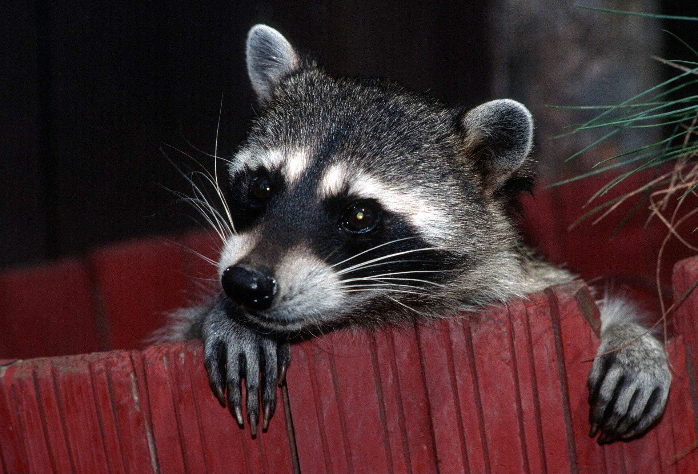
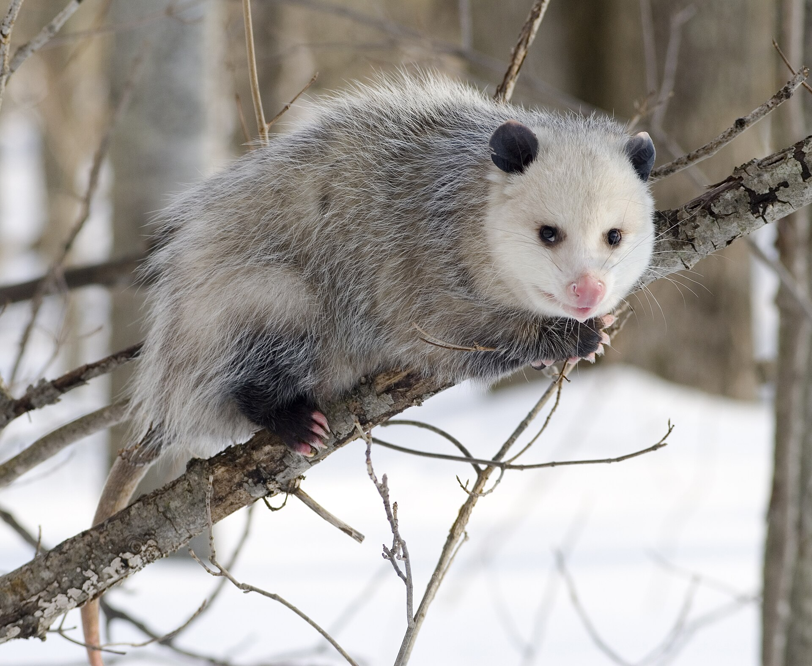
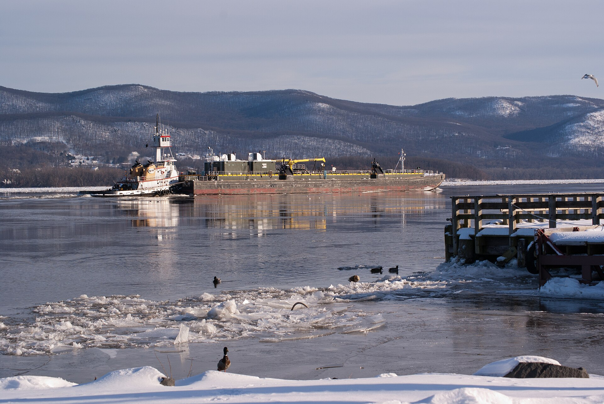
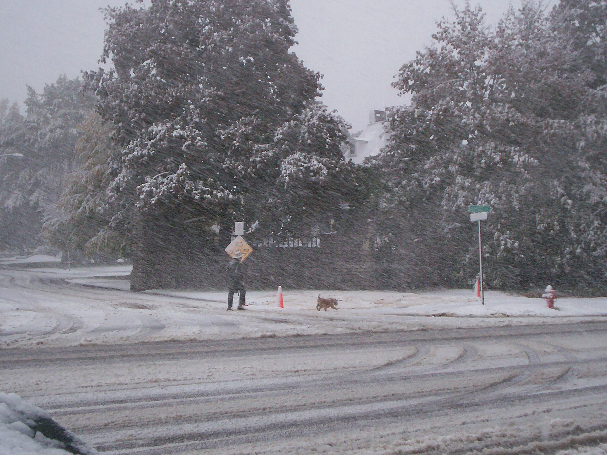
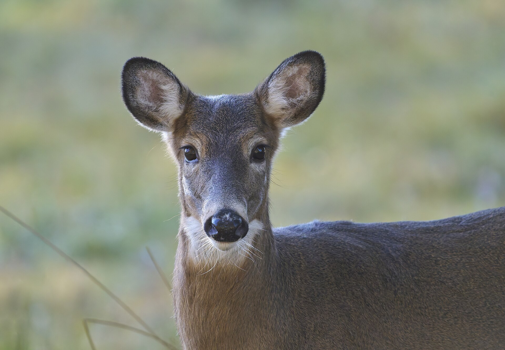

About the images on this site
Photo Credits
Every photograph on this site is a real, freely licensed image, credited to its photographer where it appears and listed in full on this page. There are no stock-agency photos, no staged job photos and no images of real customers or their homes.
The drawings are ours: the process flow, entry-point, seasonal and diagnostic charts, and the species identification diagrams, are original SVG illustrations drawn for this site. Where an illustration is used, it is labelled as one. Photographs come from Wikimedia Commons under the licences shown, most of them Creative Commons licences that require exactly this: the photographer's name, the licence, and a link back to the source. If you are a photographer listed here and want a credit corrected, contact us through the site and it will be fixed.
All photographs, credited


Raccoon (Procyon lotor)
Photo: California Department of Water Resources. Licence: Public domain. Source page.


Eastern gray squirrel (Sciurus carolinensis)
Photo: Charles J. Sharp. Licence: CC BY-SA 4.0. Source page.



Virginia opossum (Didelphis virginiana)
Photo: Cody Pope. Licence: CC BY-SA 2.5. Source page.



New York deciduous forest
Photo: Fran Trudeau from Wappingers Falls, NY, USA. Licence: CC BY 2.0. Source page.



Snow-covered upstate NY town / rooftops
Photo: The original uploader was DragonFire1024 at English Wikinews .. Licence: CC BY 2.5. Source page.

Finger Lakes lake view
Photo: The original uploader was Cornellrockey at English Wikipedia . Later versions were uploaded by Mercuryboard at en.wikipedia .. Licence: CC BY-SA 2.5. Source page.


Finger Lakes lake view (Cayuga Lake)
Photo: Ken Lund from Reno, Nevada, USA. Licence: CC BY-SA 2.0. Source page.


White-tailed deer (Odocoileus virginianus)
Photo: Paul Danese. Licence: CC BY-SA 4.0. Source page.


.jpg){kind=link}
,_portrait.jpg){kind=link}
_-_Yellowstone_National_Park_-_Waag.jpg){kind=link}


_02.jpg){kind=link}
_DSC_0030.jpg){kind=link}


.jpg){kind=link}

.jpg){kind=link}


_02.jpg){kind=link}